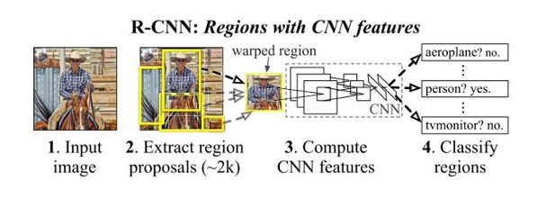
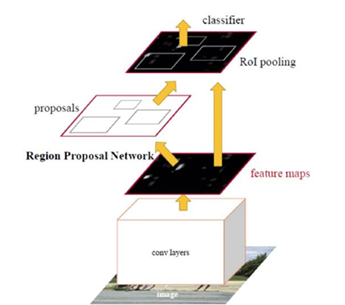
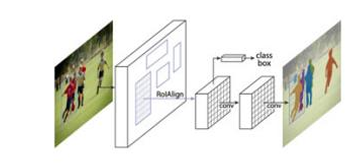
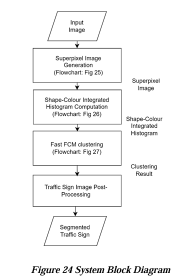
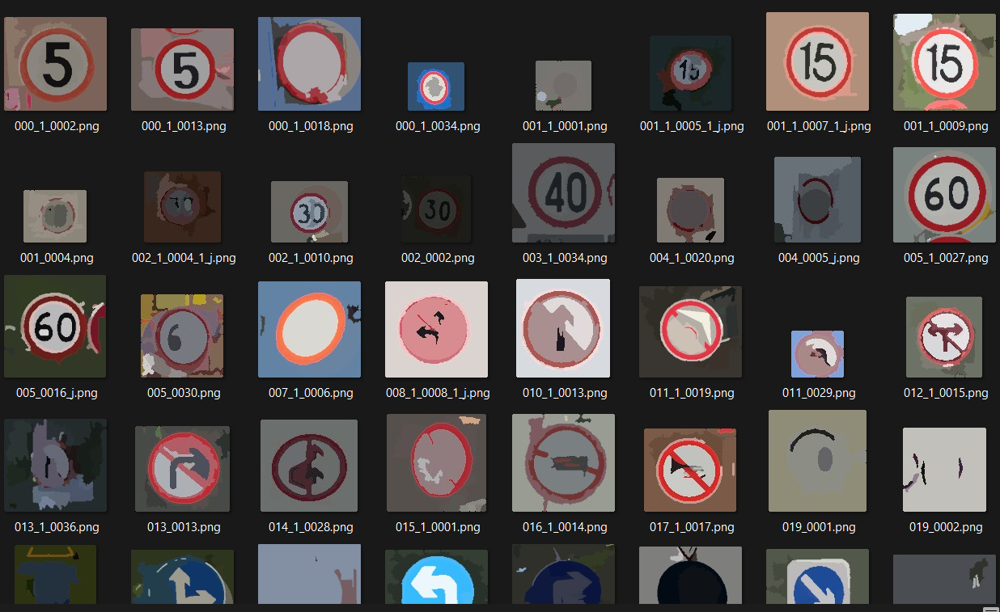
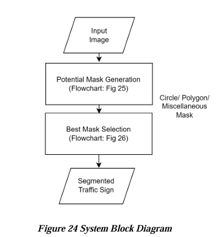
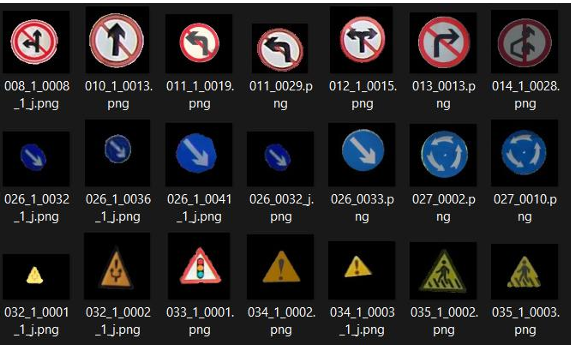
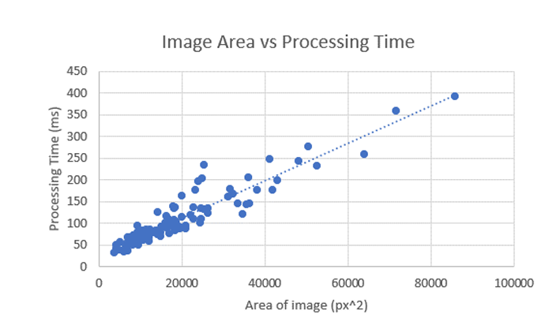

Project Contributor: Ng Jing Ying (Lead), Grace Lai Meng Huey, Oh Jia Sheng, Wai Jia Le
Supervisor: Prof. Dr Leung Khar Hang (details)
Traffic sign segmentation involves isolating traffic sign objects from a traffic scene and removing background details. A reliable segmentation method should accurately outline all potential traffic sign contours without omitting any of them. Most traffic sign segmentation methods are either colour-based or shape-based, given that traffic signs primarily come in red, yellow, or blue, and their shapes are usually polygons or circles. Unfortunately, these approaches still exhibit a high failure rate when processing occluded, blurred, or poorly illuminated signs. Alternatively, adopting deep learning based image segmentation techniques to enhance contour accuracy appears feasible, however, it becomes impractical due to the increased complexity it introduces to the entire traffic sign recognition framework.
To address these limitations, we intend to develop a traffic sign segmentation method which strikes a proper balance between segmentation accuracy and processing time. We aim to combine traditional colour-based and shape-based traffic sign segmentation methods which have been widely adopted by previous literature. We are motivated to undertake this project because many traffic sign recognition frameworks overlooked the segmentation stage, thus limiting their model’s capabilities. Hence, our proposed segmentation method will provide insights for future researchers to further maximise the traffic sign recognition capabilities.
(We only extract parts of our paper in this webpage)
R-CNN is a region proposal-based method which used selective search for region proposal generation.
As shown in Figure, the framework of faster R-CNN architecture was divided into region proposal, ROI pooling and classification.
Mask R-CNN would output a binary segmentation mask at the final stage. With a great variety of approaches that utilised R-CNN to perform instance segmentation, the author highlighted that bottom-up methods like deep watershed transform and real-time instance segmentation could be potential alternatives for future research.
Interestingly, we actually experimented various approaches based on the existing literature.
Inspired by "Superpixel-Based Fast Fuzzy C-Means Clustering for Color Image Segmentation", we propose a segmentation method which first generates superpixel using watershed algorithm, then, we statistically analyze the distribution of pixels according to the shape and colour. Finally, Fuzzy C-Means algorithm is applied to classify the pixels into background or traffic sign.
Unfortunately, this approach does not effective at scale. This is because the watershed algorithm is known of "over-segmenting" an image, which may eventually complicate the algorithm. The screenshot shows the intermediate result of the approach (after the superpixel generation steps):
Firstly, the input image is defined as a selected region of interest from a traffic scene that contains at least one traffic sign. The input image can be of very low resolution, in low light, occluded, distorted, or blurred. The potential mask generation stage involves a combination of colour-based and shape-based detection methods, namely colour thresholding, Canny edge detection, Hough circle detection and polygonal approximation. At the end of this stage, 3 types of masks, which are circle detected mask, polygon-detected mask and miscellaneous shape-detected mask are generated. In the second stage, termed the “best mask selection”, potential masks are evaluated and integrated according to pre-defined rules. Ultimately, a segmented traffic sign image is generated by performing bitwise AND operation between the input image and the final selected mask.
The algorithm is tested against 100 test images from various sources including CTSD. In these 100 test images, there are 42 polygonal traffic sign images and also 58 circular traffic sign images. As a result, there are 94 True Positives, 5 False Negatives, 1 False Positives and no True Negatives.
The advantage of traditional approach (which relies on edge detection and color filtering) is the time efficiency. We examined that the time taken to complete the algorithm has positive correlation with the size of the image.
Video Demonstration:
Conclusion: Our approach achieved a high accuracy in segmenting traffic signs, showcasing the potential of deep learning in enhancing existing traffic sign recognition systems. Further improvements could be made by integrating more diverse datasets and refining the network architecture.